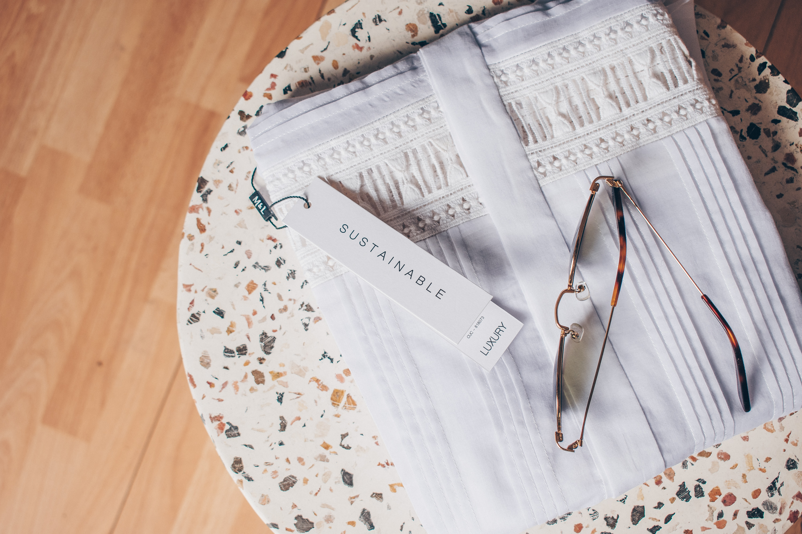
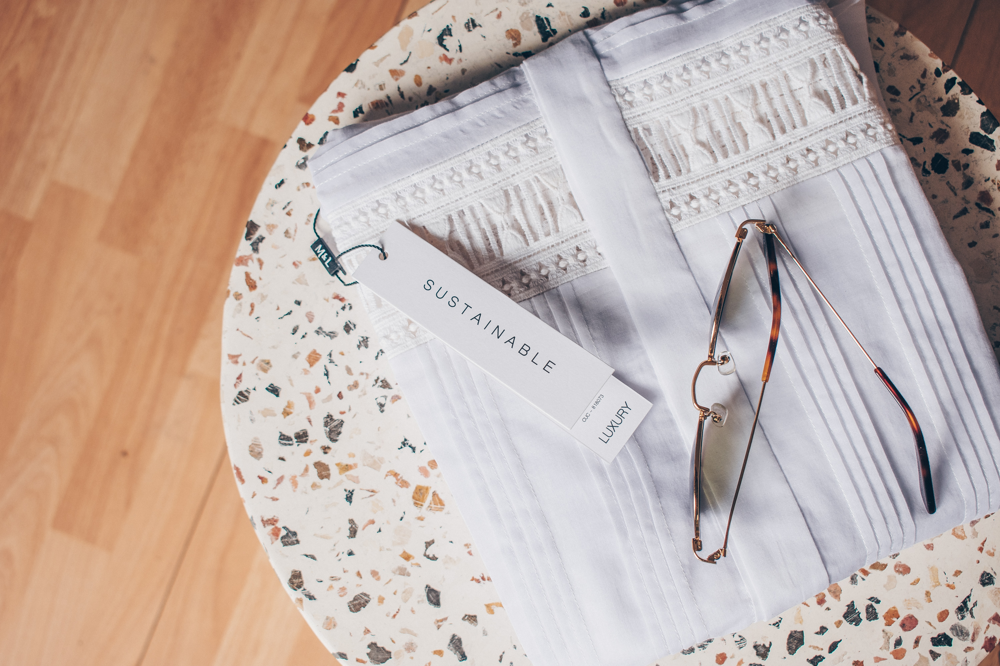
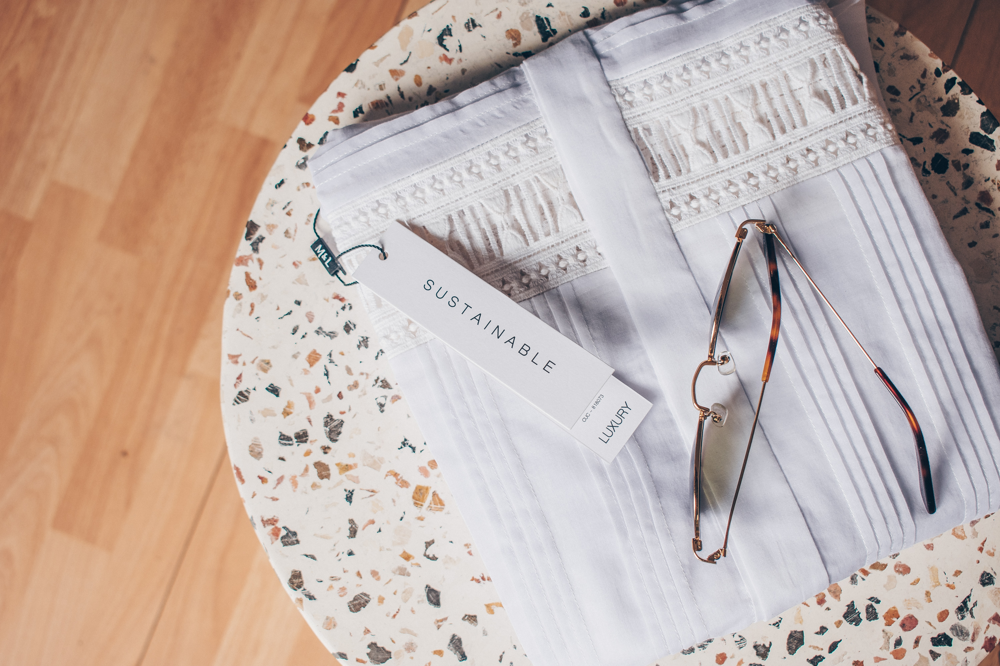
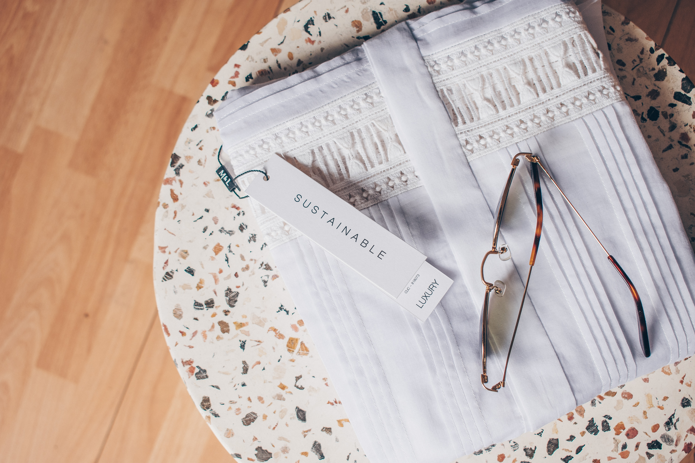

Ecological is a sustainable product brand, we provide products to you.The wave crashed and hit the sandcastle head-on. The sandcastle began to melt under the waves force and as the wave receded, half the sandcastle was gone. The next wave hit, not quite as strong, but still managed to cover the remains of the sandcastle and take more of it away. The third wave, a big one, crashed over the sandcastle completely covering and engulfing it. When it receded, there was no trace the sandcastle ever existed and hours of hard work disappeared forever.
The wave crashed and hit the sandcastle head-on. The sandcastle began to melt under the waves force and as the wave receded, half the sandcastle was gone. The next wave hit, not quite as strong, but still managed to cover the remains of the sandcastle and take more of it away. The third wave, a big one, crashed over the sandcastle completely covering and engulfing it. When it receded, there was no trace the sandcastle ever existed and hours of hard work disappeared forever.